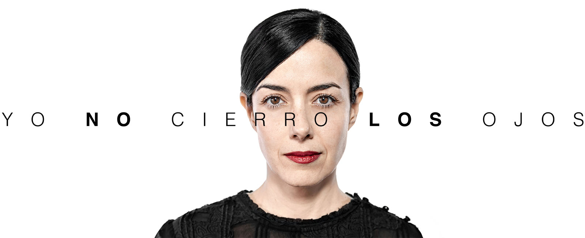
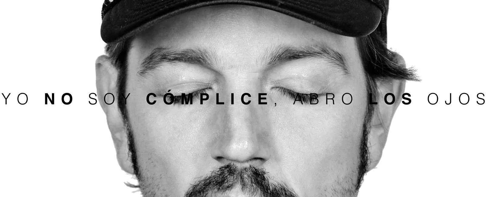
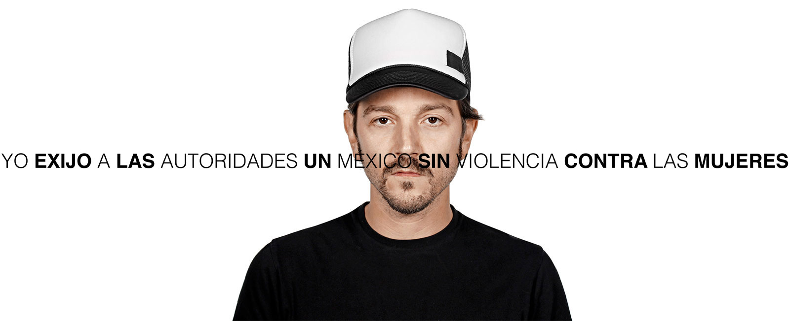
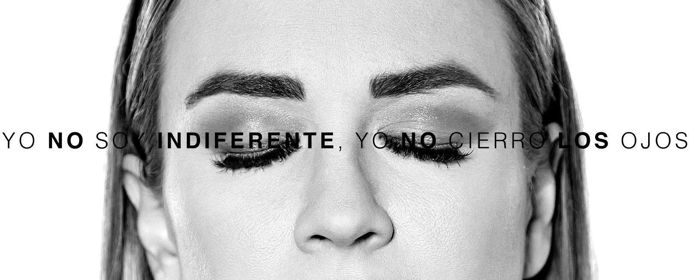

YO NO CIERRO LOS OJOS
es una iniciativa ciudadana que busca visibilizar la violencia contra las mujeres.
En México la violencia contra niñas y mujeres está presente en todas partes todo el tiempo.
Para dimensionar la magnitud de este fenómeno sólo tienes que pensar en 10 mujeres que conozcas y saber que 6 de ellas han sufrido al menos un episodio de violencia en su vida.
EVIDENCIA


* Datos tomados de: INEGI, Encuesta Nacional sobre la Dinámica de las Relaciones en los Hogares (2016), México, 2017. Disponible en http://www.beta.inegi.org.mx/proyectos/enchogares/especiales/endireh/2016/
**Datos de Incidiencia Delictiva del Fuero Común del Secretariado Ejecutivo del Sistema Nacional de Seguridad Pública.
Consulta más información sobre violencia sexual en el informe “Violencia sin interrupción”: http://aborto-por-violacion.gire.org.mx/#/
ABRE LOS OJOS
Necesitamos que tú y muchas personas más abran los ojos a la violencia en contra de las mujeres!
ALIADAS Y ALIADOS
¿Qué puedes hacer?
Si sufriste violencia:
http://vidasinviolencia.inmujeres.gob.mx/?q=lineasTelefonicas
Este proceso es distinto según la Entidad Federativa http://equis.org.mx/
Si sufriste una violación y como consecuencia estás embarazada:
www.andar.org.mx/puedeselegir/
www.tiempofuera.mx
BIBLIOGRAFÍA:
• SEGOB, INMUJERES, ONU MUJERES, La violencia feminicida en México, aproximaciones y tendencias 1985-2014. Resumen Ejecutivo, México 2016. P. 10. Disponible en http://cedoc.inmujeres.gob.mx/documentos_download/101258.pdf
• INEGI, Encuesta Nacional sobre la Dinámica de las Relaciones en los Hogares (2016), México, 2017. Disponible en http://www.beta.inegi.org.mx/proyectos/enchogares/especiales/endireh/2016/
• Comisión Ejecutiva de Atención a Víctimas, Cartilla de Derechos de las Víctimas de Violencia Sexual Infantil. Disponible en: http://www.ceav.gob.mx/wp-content/uploads/2016/06/cartilla.pdf
• IIJUNAM, Encuesta Nacional de Género (2014), México, 2015. Disponible en http://www.losmexicanos.unam.mx/genero/encuesta_nacional.html
Esta campaña es financiada por el Grupo de Información en Reproducción Elegida, GIRE.


{kind=link}
{kind=link}
{kind=link}
{kind=link}
{kind=link}
{kind=link}